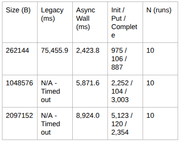
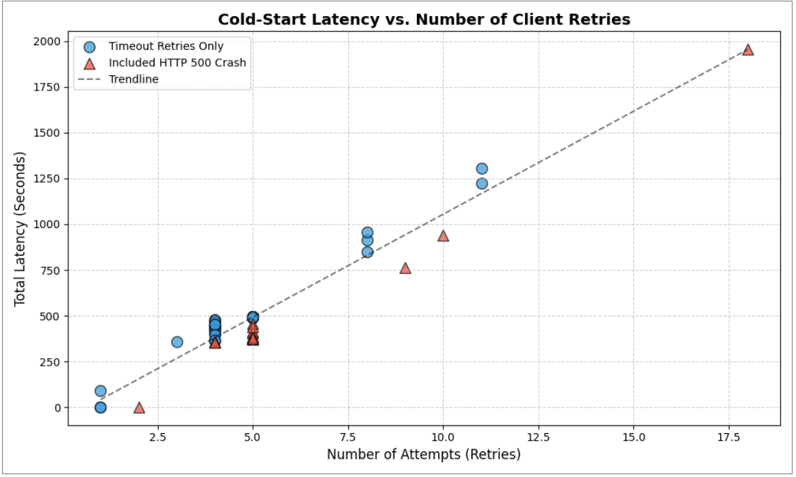
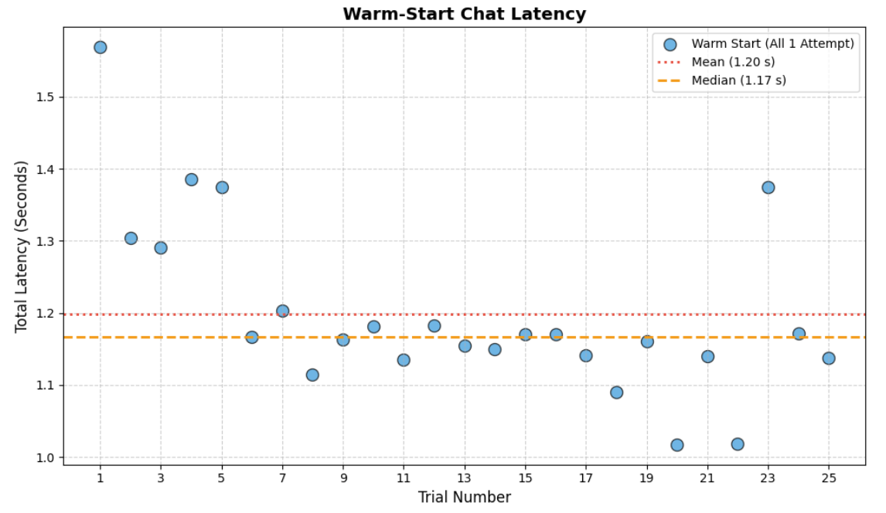
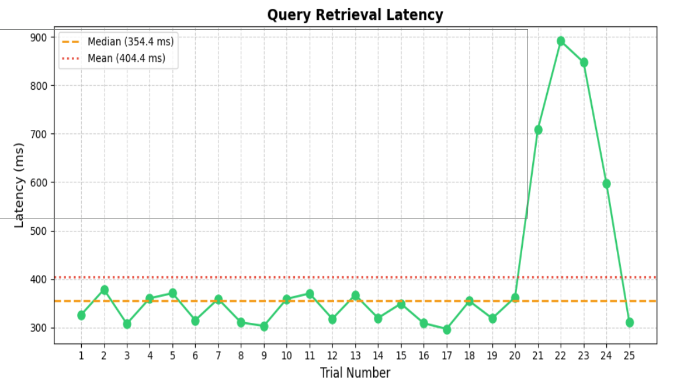
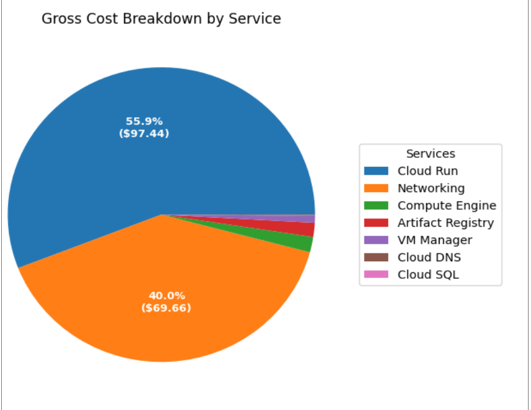

Note: This project was developed as a team effort for completion of Temple CIS 4398 Projects in Computer Science.
Information presented below is modified for general readership.
My primary contributions are the networking, document ingestion pipeline, and warmup endpoint.
Project Name: Managed AI Infrastructure Platform
Networking
Workloads ran inside a VPC on GCP, with traffic handled by a Google Cloud load balancer. The deployment was intentionally scoped to three project teams that built separate frontends: each team deployed VMs on GCP and routed traffic through this VPC layout to reach our API. Custom subnetting and VPC peering were used along with API keys to secure access.
Functionality
A product team could provision a project against our API, open a chat session, and send user-entered prompts to the hosted LLM (vLLM) via the chat endpoint. The stack was pure retrieval-augmented generation, with an optional system prompt. Teams could upload documents stored and partitioned such that model answers were constrained to that team’s own uploaded material.
Optimizations and Metrics
My largest individual contribution here was asynchronous document ingest. The original synchronous path fused upload, chunking, and embedding into one blocking operation; the async redesign let those stages run concurrently. Legacy synchronous ingest timed out on any document larger than about one megabyte, whereas async ingest accepted larger documents and, on successful runs, averaged about thirty-one times faster.

vLLM startup was costly, but minimum instances stayed at zero to protect budget. A warmup endpoint shifted part of that cold-start cost into project setup instead of first user-facing requests. Trials showed mean cold-start latency around 501,326 milliseconds versus about 1,199 milliseconds once warm. Much of that gap traces to running on free-tier class micro instances; stronger hardware would narrow latency substantially.


Query retrieval averaged about 404 milliseconds, with spikes to a worst case near 891 milliseconds in the charted run. Timing was end to end to HTTP 200 - not time to first byte or a server-only stopwatch - so the numbers approximate what a user waits for in the slow path while staying under roughly one second at the tail.

Mean reciprocal rank against live indexed chunks was a custom check
on API quality: pick a gold chunk, derive a query from its text,
POST to /query, and verify that chunk appears in the
top-k sources the model surfaced. Across all trials and gold
chunks, MRR was 1.0.
Gross cost by service landed at $174.27 - about fifty-eight percent of the overall budget - for the February 14 through April 23 window.
